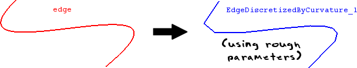

cfdmsh 4.0 documentation
cfdmsh 4.0 documentation cfdmsh 4.0 documentation


Discretizes an edge into a wire made of straight edges taking into account the local curvature.
This function works through an iterative algorithm. First, it starts with a given number of equidistant vertexes from which segments are created. Then, it computes the distance between these segments and the input edge so as to detect which segment must be refined, and so on.
def DiscretizeEdgeByCurvature( edge = None, np = 20, fine = 1e3, it_max = 10, single = True, add = True, infa = False, dim = 1 ):

| Name | Description | Type | GUI selection [?] | Selection by name [?] | Recursive [?] | Default value |
|---|---|---|---|---|---|---|
| edge | The edge to discretize. | Edge | yes | yes | yes | None |
| np | See here. In this case, corresponds to the number of vertexes used for the first iteration. |
Integer | - | - | - | 20 |
| fine | The desired fineness. Higher it is, finer is the discretization. | Float | - | - | - | 1e3 |
| it_max | The maximum number of iterations. | Integer | - | - | - | 10 |
| single | See here. | Boolean | - | - | - | True |
| add | See here. | Boolean | - | - | - | True |
| infa | See here. | Boolean | - | - | - | False |
| dim | See here. | Integer | - | - | - | 1 |
| dim Value [?] | single Value [?] | Type | Number | Name |
|---|---|---|---|---|
| 0 | False | Vertex | n | "EdgeDiscretizedByCurvature (Vertex)" |
| 0 | True | Compound of Vertexes | 1 | "EdgeDiscretizedByCurvature (Vertexes)" |
| 1 | False | Edge | n | "EdgeDiscretizedByCurvature (Edge)" |
| 1 | True | Wire | 1 | "EdgeDiscretizedByCurvature" |
from cfdmsh import * # To adapt to the cfdmsh installation method
import math
vertexes = []
for x in range(10):
vertexes.append(geompy.MakeVertex(x, math.cos(x), 0))
curve = geompy.MakeInterpol(vertexes)
AddToStudy(curve, "curve")
discretized_edge = DiscretizeEdgeByCurvature(curve)
discretized_edge_vertexes = DiscretizeEdgeByCurvature(curve, dim = 0)
-
cfdmsh 4.0 documentation
tougeron-cfd.com © 2016